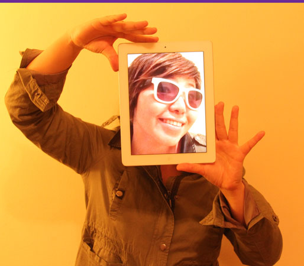

Yuka Yamashita is a Bass player in the Los Angeles area.
Photography - Her talents include developed abilities in Art and Music including: making, editing, and shooting videos, applying stage and lighting design, photography with an emphasis on stylistic adaptation displayed in background & lighting setting of live music events.
She also works in the field of photography / photographic manipulation through means of programs such as Photoshop and Final Cut Pro, as well as hands-on approaches including obtaining a color saturate license in Japan.

Deejaying - Emphasizing 'classic' L.A. in-demand style such as Electronica, Indie, Shoegaze, Soul, Twee, Pop, Dub, Trance, Yuka has an expansive knowledge of the most Cutting-Edge in the Tokyo Club Dance and Rock Scene.
Bass Playing - A self-taught rock&roll and blues based bass player, with ability to improvise, sing, play guitar & songwriting.
"Layla" - (June 2010 - Current) ~ A Classic Rock Trio w/ Douglas Charles Johnson II (Lead Guitarist / Singer). Live Dates throughout 2011. TBA. "All My Brothers and Sisters" ~ A Rock Ensemble Collective of Various L.A. bands including (Whispering Pines, Cat Power, The Meek, The Moon Upstairs)
Special Skills: * Software: Skilled with Mac, Final Cut Pro, Photoshop, MS office. * Japanese & English Fluency with Korean Proficiency (Intermediate Level, written and Spoken).